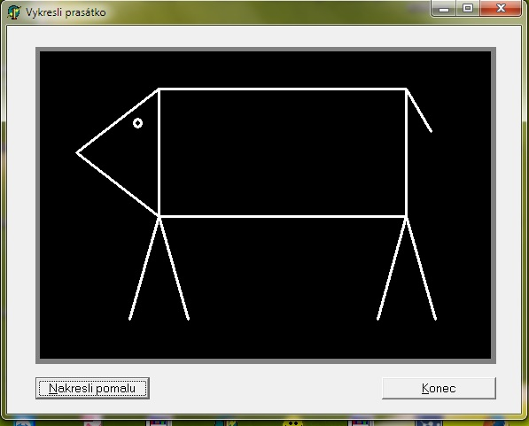
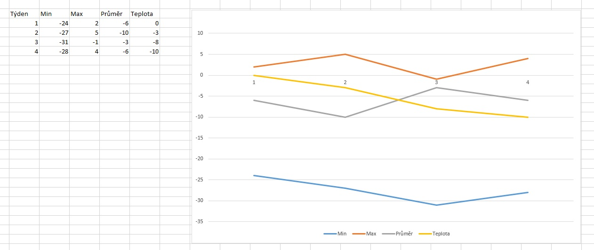

Soutěž v programování – 28. ročník
Krajské kolo 2014/2015
Úlohy můžete řešit v libovolném pořadí a samozřejmě je nemusíte vyřešit všechny. Za každou úlohu můžete dostat maximálně 10 bodů, z nichž je většinou 9 bodů vyhrazeno na ohodnocení funkčnosti programu, jeho shody se zadáním a efektivity a jeden bod na dokumentaci a přehlednost zdrojového kódu (vhodné členění zdrojového kódu, vhodně zvolené názvy indentifikátorů, komentáře na místech, kde je to potřeba, atd.). Body získané za každou úlohu se ještě násobí koeficientem, který odráží složitost úlohy.
Na řešení úloh máte 4 hodiny čistého času.
Před zahájením soutěže vám pořadatel oznámí, kde najdete testovací soubory a kam máte ukládat řešení úloh.
Koeficient 1
Vytvořte program, který zobrazí prasátko podobné tomu na následujícím obrázku:
Program bude pracovat tak, že postupně zobrazuje jednotlivé úsečky (a kružnici) tvořící obrázek prasátka. Prodleva mezi zobrazením jednotlivých úseček bude 0,5 s. Posloupnost zobrazení není důležitá a nebude se hodnotit.
Při změně velikosti základního okna obrázek překreslete tak, že zachovává původní proporce prasátka (šířka čar přitom zůstává stejná).
Nadstavbovou funkcí programu je pomalé (animované) vykreslení jednotlivých úseček tvořících prasátko:
Pro inspiraci je připravena ukázková aplikace (funguje v operačním systému Windows).
Koeficient 1
Jakub se vrací ze školy celý smutný – za domácí úkol musí s využitím Eukleidova algoritmu spočítat spoustu příkladů se zlomky. Postup ve škole celkem pochopil, ale kdo mu zkontroluje, že má příklady spočítané správně? Pomozte Jakubovi, aby si příklady mohl zkontrolovat sám a nemusel už věšet hlavu! Takovouto činnost by měl přece zvládnout jednoduchý program.
Každý příklad na sečtení dvou zlomků vypadá následovně:
kde a, b, c, d, x, y a z jsou celá kladná čísla. Dále platí, že čitatel je nesoudělný s jmenovatelem (zlomky jsou pokráceny) a také a < b, c < d a y < z. Pokud je součtem zlomků celé číslo, pak y = 0 a na z nezáleží.
Vypracujte program, který načte hodnoty a, b, c a d ze vstupního souboru a výsledné hodnoty x, y a z zapíše do výstupního souboru.
Vstup načtěte ze souboru zadani.txt v aktuálním
adresáři.
Každému příkladu odpovídá jedna řádka, tedy vstupní soubor
zadani.txt na jedné řádce obsahuje vždy čtyři čísla oddělená
mezerou. Řádky jsou ukončeny dvojicí znaků CR
a LF. Předpokládejte, že příkladů bude méně než dvacet.
Dále pro jednoduchost předpokládejte, že čísla a, b,
c a d jsou menší než 109.
Výstup zapište do souboru vystup.txt v aktuálním
adresáři.
Každému příkladu odpovídá jedna řádka, tedy výstupní soubor bude
obsahovat na jedné řádce vždy tři čísla oddělená mezerou.
Řádky ukončete dvojicí znaků CR a LF.
Příklad vstupního souboru zadani.txt:
1 5 4 5 2 3 2 3 1 3 1 3 1 5 7 8 8 15 4 5 63 1310400 31423 72225
Příklad výstupního souboru vystup.txt, který odpovídá
výše uvedenému zadani.txt:
1 0 0 1 1 3 0 2 3 1 3 40 1 1 3 0 1045873 2403648
Ilustrativní zobrazení pro výše uvedený vstup a výstup:
| Vstup | Výstup | Ilustrativní zobrazení |
|---|---|---|
| 1 5 4 5 | 1 0 0 | 1/5 + 4/5 = 1 |
| 2 3 2 3 | 1 1 3 | 2/3 + 2/3 = 1 + 1/3 |
| 1 3 1 3 | 0 2 3 | 1/3 + 1/3 = 0 + 2/3 |
| 1 5 7 8 | 1 3 40 | 1/5 + 7/8 = 1 + 3/40 |
| 8 15 4 5 | 1 1 3 | 8/15 + 4/5 = 1 + 1/3 |
| 63 1310400 31423 72225 | 0 1045873 2403648 | 63/1310400 + 31423/72225 = 0 + 1045873/2403648 |
Ukázkové soubory pro testování vašeho programu najedete v adresáři
zlomky.
Koeficient 2
Z dominových kostek vytvořte co nejdelší na sebe navazující řadu za předpokladu, že dominové kostky můžete otáčet. Body dostanete podle délky nalezené řady. Lze tedy získat body i v případě, že váš program nenalezne nejdelší možnou řadu. Program by měl najít řešení do několika vteřin.
Například z kostek [1:3], [1:3],
[4:5], [3:3] a [0:5] lze vytvořit
řadu [1:3][3:3][3:1] (a dvě kostky zbudou).
Řad lze většinou vytvořit více, ale vy máte za úkol najít libovolnou z nich, hlavně musí být co nejdelší.
Vstupem bude textový soubor, ve kterém každé kostce odpovídá jeden zápis ve tvaru
[a:b], kde a a b jsou celá čísla z intervalu od 0 do 6.
Počet dominových kostek ve vstupním souboru je minimálně jedna a maximálně
1000. Všechny dominové kostky jsou zapsány bez mezer na jednom řádku.
Výstupem bude textový soubor, ve kterém budou uvedeny vybrané (a správně
natočené) na sebe navazující kostky ve tvaru [a:b], například:
[1:3][3:3][3:1]
Mezery ve výstupním souboru se ignorují, ale vypište prosím všechny kostky bez mezer na jeden řádek.
Výsledný soubor se bude vyhodnocovat programově. Proto je potřeba
zachovat předepsaný tvar – viz soubory reseni_soutezici[1-9].txt.
Část bodů bude přidělena i v případě, že nedosáhnete maximální možné délky.
Pro kontrolu vámi vytvořených řešení máte k dispozici validační program
validace_soutezici.html,
který po otevření v prohlížeči vyhodnotí vaše řešení libovolné z úloh
zadani_soutezici[1-9].txt.
Ukázkové soubory se zadáním a jedním z možných nejdelších řešení
naleznete v adresáři domino.
Koeficient 2
Vědět nebo aspoň tušit, jaké bude počasí je určitě dobrá věc, naši předkové k tomu používali prognostiky, něco jako Medardova kápě, 40 dní kape nebo Na Svatého Jiří vylézají hadi a štíři… Doba ale pokročila a nám s předpovědí počasí pomáhají nové moderní metody. Jednou z nich je i sledování naměřených hodnot za poslední roky a určování pravděpodobného počasí na základě naměřených dat.
Vaším úkolem bude napsat program, který načte meteorologická data ze vstupního souboru, následně je zpracuje, vyhodnotí a umožní uživateli si je prohlédnout v grafické podobě.
Vstupní soubor obsahuje data od 1. ledna 1975 do 31. prosince 2014, vždy jedno měření pro každý kalendářní týden v daném roce. Váš program by měl umožnit uživateli následující:
týden/rok od–
týden/rok do(například tedy 12/1975–15/1975), pro který se mají zobrazit meteorologická data.
Ukázka grafu:
Na vstupu obdržíte CSV soubor, formát vstupních dat je následující:
Rok;Týden;Teplota 1975;1;14 1975;2;15 1975;3;27 1975;4;6 1975;5;14 1975;6;19 1975;7;-21 … 2014;52;-93
Na první řádce jsou názvy údajů. Následuje libovolný počet řádek,
kde jsou postupně uvedené rok, týden a teplota oddělené
středníkem. Řádky jsou ukončené znaky CR a LF.
Ukázkový soubor: meteodata/meteodata.csv.
Pro jednoduchost počítejte s tím, že každý rok má 52 týdnů, k dispozici jsou hodnoty za posledních 40 let (tj. od roku 1975), máte k dispozici hodnoty pro každý týden v roce (měření proběhlo vždy ve středu v každém týdnu).
Přibližnou ukázku toho, jak mají grafy vypadat, si můžete vyzkoušet v jednoduché ukázkové aplikaci – meteodata/Meteodata.jar.